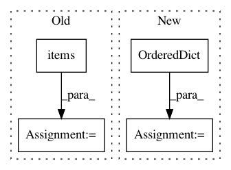

2fe1f942de95b3fe11acb4881c8f18f65d73bd8e,deepexplain/tensorflow/methods.py,,deepexplain_grad,#Any#Any#,109
Before Change
cases = OrderedDict(
(
(tf.equal(mode, flag), lambda: method_class.nonlinearity_grad_override(op, grad))
for method, (method_class, flag) in attribution_methods.items()
)
)
return tf.case(cases, default=lambda: grad * grad_activation(op.name)(op.inputs[0]))
After Change
input = op.inputs[0]
return grad * grad_activation(op.name)(input)
cases = OrderedDict({
tf.equal(mode, 0): (lambda: DummyZero.nonlinearity_grad_override(op, grad)),
tf.equal(mode, 1): (lambda: Saliency.nonlinearity_grad_override(op, grad)),
tf.equal(mode, 2): (lambda: GradientXInput.nonlinearity_grad_override(op, grad)),
tf.equal(mode, 3): (lambda: IntegratedGradients.nonlinearity_grad_override(op, grad)),
tf.equal(mode, 4): (lambda: EpsilonLRP.nonlinearity_grad_override(op, grad)),
})
return tf.case(cases, default=default, exclusive=True)
In pattern: SUPERPATTERN
Frequency: 3
Non-data size: 4
Instances
Project Name: marcoancona/DeepExplain
Commit Name: 2fe1f942de95b3fe11acb4881c8f18f65d73bd8e
Time: 2017-11-03
Author: marco.ancona@inf.ethz.ch
File Name: deepexplain/tensorflow/methods.py
Class Name:
Method Name: deepexplain_grad
Project Name: pfnet/optuna
Commit Name: 6165fc267993ef3b58ca918f623a7e344729e6dd
Time: 2020-02-27
Author: hiroyuki.vincent.yamazaki@gmail.com
File Name: optuna/importance/_fanova.py
Class Name:
Method Name: _get_distributions
Project Name: arviz-devs/arviz
Commit Name: d55bad55b6a9e97f800c97c73038bc5ed8d4b31f
Time: 2018-11-03
Author: ahartikainen@users.noreply.github.com
File Name: arviz/data/io_pystan.py
Class Name: PyStanConverter
Method Name: observed_data_to_xarray